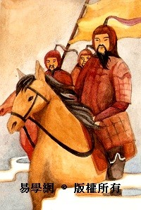
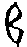
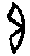
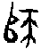
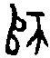

7 師卦 地水師
師貞，丈人吉，无咎。初六，師出以律，否臧凶。九二，在師中吉，无咎，王三錫命。六三，師或輿尸，凶。六四，師左次，无咎。六五，田有禽，利執言，无咎。長子帥師，弟子輿尸，貞凶。上六，大君有命，開國承家，小人勿用。
【卦名】
今本：師 帛書：師 歸藏：師 秦簡：師 上博簡：帀 清華簡：帀 海昏：師
「師」原為軍隊單位，一師2500人，引申為「眾」，或眾人聚集的意思。又引申為領導眾人的官長、統帥、師長、導師。《周易》的師當作軍隊解釋，但卦爻辭中也有眾人、領導眾人之義，亦有領導、師長、導師的寓義。因此師卦卦義含蓋了「師」字的原義與引申義。
《爾雅》：「師，旅，眾也。」鄭玄：「軍二千五百人為師。多以軍為名，次以師為名，少以旅為名。師者，舉中之言。」《說文》「二千五百人為師。从帀从𠂤。𠂤四帀，眾意也。」段注：「《小司徒》曰：五人為伍，五伍為兩，四兩為卒，五卒為旅，五旅為師，五師為軍。師，眾也，京師者大眾之稱。眾則必有主之者，《周禮》師氏正玄注：『師，教人以道者之稱也。』黨正旅師閭胥注曰：『正師胥皆長也，師之言帥也。』」
再就字源來看，甲骨文以𠂤為師，作或，到周代的甲骨文或金文才作或。𠂤即古「堆」字，小土堆、小山丘的意思，加藤常賢則認為這是「臀尻」。《說文》:「𠂤，小阜也。」段注：「其字俗作堆，堆行而𠂤廢矣。」徐中舒《甲骨文字典》：「旅途中坐臥止息及止息之處亦為𠂤，行旅征伐所集結者最為眾多，故軍旅止息駐扎之𠂤引申為師眾之師。」周代金文加了右偏旁「帀」，帀為周匝的意思，以一群人圍繞駐匝小山丘來代表軍隊，這也成為後來篆、隸及今日的師字。
上博簡及清華簡卦名皆做「帀」，古文「帀」通「師」。「帀」本義為平均在外的分布，均布的意思。《說文》：「周也，从反之而帀也。」段注：「𠣘各本作周，誤，今正。勹部『𠣘，帀徧也』，是為轉注。按：古多假襍為帀。」「帀」字就形構來說是ㄓ（之的古字）的倒寫。依段注，《說文》「周也」是「𠣘也」之誤，《說文》勹部的𠣘字就以帀來解釋，段注說：
𠣘與周義別。口部曰『周者密也』，周自其中之密言之，𠣘自其外之極復言之。凡圜周、方周、周而復始，其字當作𠣘，謂其極而復也。凡圜幂、方幂、幂積謂之周，謂其至密無疏罅也。《左傳》以周疏對文，是其義。今字周行而𠣘廢，槩用周字，或又作週，殊爲乖舛，名之當正者也。有帀而不密者，有密而不帀者，故其字宜辨也。宙者舟輿所極復，𠣘與宙音義皆相近。易曰：周流六虚，蓋自古叚周為𠣘矣。
𠣘通帀，與周意思非常相近，但字義有別。𠣘為平均而較為鬆散的由內向外部四周無止盡的分布。周則是在一定範圍內密集的分布。一疏一密，一外一內。但這種差別在後來文字的發展中都混淆了，「今字周行而𠣘廢」，現在不論疏密與內外的分布都被稱為周或週。
總合以上資料，「師」字形構是藉由一望無際的一大群人平均散布在土堆之外來抽象表達軍隊的概念，而從𠂤從帀也正符合上坤下坎的卦象。左𠂤兼具土堆及群眾之義，就如上卦的坤具備高地及群眾之卦象。而帀則符合坎為律之象（《九家易》：「坎爲法律也。」《爾雅》：「坎，律，銓也。」），律本義為均布，即平均分布，這也是帀（𠂤）之本義。再從三畫卦的坎卦來看，上下各一陰（陰為眾）平均分布在陽實之外，亦符合「均布」的意義。
【卦義】
興師動眾，帶兵打仗。責任重大，憂慮很深。
師卦是統領眾人，帶兵打仗的意思。得此卦表示事情複雜，責任重大，因此讓人憂心忡忡。
卦序上師卦與比卦為上下相反的一對綜卦，是繼需訟兩卦而來。《序卦》：「訟必有眾起，故受之以師，師者眾也。」《象傳》：「師，君子以容民畜眾。」《彖傳》：「師眾也，貞正也，能以眾正，可以王矣。」師卦是因為兩國爭訟，因此興師動眾以解決爭端，也是戰爭、聚眾討伐的意思。討伐他人必需師出有名，名正言順，因此曰「師貞」。
坤在上為高地，互卦坤為眾，坎在下為隱伏，眾人隱伏於高地之下，行師之象；又坎為律、為均布，眾人均布於高地之下，即「師」的古字義。上坤為地為邦國，下坎為溝瀆（護城河），互體有坤眾及震動，動眾走出溝瀆征伐他國，出師之象。坎為憂心，坤為腹，藏憂腹中之象。因此《雜卦》說「比樂師憂」。
朱熹解釋上坤下坎的卦象說：「古者寓兵於農，伏至險於大順，藏不測於至靜之中。」
以六爻來看，九二一陽居下卦之中為師卦之主爻，二為臣位，陽剛之臣（武臣）應六五之君。坤為眾，九二受命領眾，銜命率兵之象。
師卦象徵事情複雜困難而多憂。若是與人事相關的事情，則以選擇年老持重而有處事經驗或有智慧、謀略的長者為宜。
成書於周朝的《周易》，若要論「師」之始祖，不論是就軍師或國師之師來說，非太公望（呂尚）莫屬，因此太史公說：「呂尚所以事周雖異，然要之為文武師。」「其事多兵權與奇計，故後世之言兵及周之陰權，皆宗太公為本謀。」
師卦典故當源自於周武王以太公望為師而興師伐紂之事，《史記．周本紀》：「武王即位，太公望為師，周公旦為輔，召公、畢公之徒左右王，師脩文王緒業。…遂興師，師尚父號曰…」《詩．大明》：「維師尚父。時維鷹揚，涼彼武王。肆伐大商，會朝清明。」尚父即太公望，也是民間常稱的姜太公、姜子牙。
呂尚在年老時才遇到西伯（後來的周文王），師卦卦辭所指「丈人」為對於老者之尊稱，即指呂尚，《莊子．田方子》談到文王以呂尚為師即以「丈人」稱之：「迎臧丈人而授之政」，「文王於是焉以為大師」。「臧丈人」就是呂尚。臧是地名，為呂尚釣魚而遇文王之處，位於今渭水附近。文王死後，武王繼位，同樣奉呂尚為師，上六爻辭的「大君有命，開國承家」似乎是武王在以呂尚為師之下成功伐紂並建立周王朝、分封諸侯之事。
師貞，丈人吉，无咎。
- 彖曰：師眾也，貞正也，能以眾正，可以王矣。剛中而應，行險而順，以此毒天下，而民從之，吉又何咎矣。
- 象曰：地中有水，師，君子以容民畜眾。
- 《序卦傳》：訟必有眾起，故受之以師，師者眾也。
- 《雜卦傳》：比樂師憂。
- 《易之義》：師者得之救也。
【今解】
出師以正，長者吉，沒有罪咎。
出師有名，以老成而有智慧、謀略的長者領軍，吉而沒有罪咎。《彖》：「師眾也，貞正也。能以眾正，可以王矣。」出師討伐，目的在於以群眾暴力糾正他人之行為，因此要師出以正，即師出有名。
「師貞丈人吉」也可讀為「師，貞丈人吉」，貞解釋作問卜，引申為問。貞丈人吉，問丈人則吉。
【字義】
師貞丈人吉无咎：有許多種讀法，「師，貞，丈人吉，无咎」、「師貞，丈人吉，无咎」、「師貞丈人，吉无咎」、「師，貞丈人吉，无咎」。
師貞：出師以正，師出有名。師，軍隊。貞為正。《彖傳》以「眾正」解釋：「師眾也，貞正也，能以眾正，可以王矣。」
師，貞丈人：貞亦可解釋為「問」，《周禮》「陳玉以貞來歲之媺惡」鄭玄注引鄭司農：「貞，問也。《易》曰：『師，貞丈人吉。』問於丈人。《國語》曰：『貞於陽卜。』」貞原意為卜問，引申為問。「師，貞丈人」，言出師、行師，當問於丈人，請益於長者為吉。
丈人：長者、師長，有經驗而老成持重者。因為帶兵打仗的事非同小可，一定要有經驗而能夠駕御眾人者當領導者，才得為吉。鄭康成：「丈之言長，能御眾有正人之德，以法度為人之長。」丈人或作大人，李鼎祚《周易集解》：「《子夏傳》作『大人』是也，今王氏曲解『大人』爲『丈人』，臆云『嚴莊之稱』。」此說也得到後世許多學者的支持，然而觀師卦全卦，以「丈人」為宜，大人應是傳抄之誤。師卦講的是武王以太公望為「師」並興「師」伐紂之事，「丈人」即指太公望。《莊子．田方子》載，文王「寓政於臧丈人」，「臧丈人」即太公望。《史記》：「呂尚蓋嘗窮困，年老矣，以漁釣奸周西伯。」呂尚因為年老遇文王，因此稱「丈人」，丈人為對年老者之尊稱。《史記．齊太公世家》稱：「呂尚所以事周雖異，然要之為文武師。」「周西伯昌之脫羑里歸，與呂尚陰謀修德以傾商政，其事多兵權與奇計，故後世之言兵及周之陰權，皆宗太公為本謀。」此言周自文王及武王，都以呂尚為「師」，談及兵法及周之權謀，非呂尚莫屬，因此師卦當指太公望為國師之事，丈人也是對太公望的尊稱。
吉无咎：吉則沒有罪咎，吉為得到无咎的條件。王弼：「興役動眾，无功則罪，故吉乃无咎。」王弼認為「吉」相當於有功，有功就是吉。吉則沒有罪咎，反之，若是出師無功而返，則是不吉，會有罪咎。
初六，師出以律，否臧凶。
象曰：師出以律，失律凶也。
【今解】
軍隊出征，要有紀律，若紀律不彰則大凶。
軍隊出征一定要有良好的紀律，軍法要森嚴。反之，如果散亂而無紀律將會大凶。《象》曰「師出以律，失律凶也」，「否臧」即「失律」，失去紀律則凶，呼應前「師出以律」。
坎為律法之象，故曰律。初六處下卦坎險及師卦之初爻，即出師之時，因此曰師出以律。爻變後下卦成兌，兌為毀折，律法變（失律）則有凶。《九家易》：「坎爲法律也。」《爾雅》：「坎，律，銓也。」
【字義】
師出以律：軍隊出征，要有良好的紀律。師出，軍隊出征。以，用。以律，使用紀律，意思為要有良好的紀律。「以」也可以解釋為「為…目的」，「以律」即以約束規範他國為目的，討伐之義。《說文》：「律，均布也。」段注：「《易》曰：『師出以律。』《尙書》：『正日，同律度量衡。』《爾雅》：『坎律銓也。』律者所以笵天下之不一而歸於一，故曰均布也。」依段注，「以律」即是為規範天下的不統一而讓它歸於統一。有一派學者以「律」為音律、六律者，此論依據如《周禮》：「大師，執同律以聽軍聲，而詔吉凶。」注：「大師，大起軍師。《兵書》曰：『王者行師出軍之日，授將弓矢，士卒振旅，將張弓大呼，大師吹律合音。商則戰勝，軍士強；角則軍擾多變，失士心；宮則軍和，士卒同心；徵則將急數怒，軍士勞；弱則兵羽，少威明。』」《史記．太史公自序》《索隱》：「古者師出以律，則凡出軍皆聽律聲，故云『聞聲效勝負，望敵知吉凶』也。」《正義》：「古者師出以律，凡軍出皆吹律聽聲。律書云『六律為萬事根本，其於兵械尤所重。望敵知吉凶，聞聲效勝負』。」以「律」為「音律」有兩種意義，一是以音律來指揮軍隊，古代或有其事，或者如鳴金擊鼓一類也可視為以音律指揮軍隊，但應只是更廣泛「軍律」的特例或一部份，不能當作「軍律」之全部而言。以律為「紀律」較「六律」或音律更具意義並符合事理。二是在出師之時，聽其音律，以關勝負之機。若是軍容壯勝，軍聲屬「商」，那麼可能就是戰勝之徵兆，如果軍聲不臧（臧為善或壯），那麼就是敗象。
否臧凶：帛本作「不臧兇」，紀律或軍容不善則凶。否通不，音鄙。臧音「髒」，《爾雅》、《說文》皆作「善」解。否臧，即不臧，不善，意指紀律不善，沒有紀律。所以《象傳》說「失律凶也」，「失律」即「否臧」，此亦《尚書．冏命》所言：「發號施令，罔有不臧。」否臧也可解釋為不正。否臧凶，不正則凶，此呼應卦辭「師貞」，「能以眾正，可以王矣」。臧也可做壯解，音與義皆通「壯」，強壯之意。「否臧凶」意思為軍容不強壯，因此為凶。那麼此爻應該解釋為：軍隊出征，雖然很有紀律，但是不夠強大所以為凶。或者以前文「師出以律」為出師之時聽軍隊之音律軍聲，音律即軍容之表現，軍容若不壯，乃敗跡，為凶象。《莊子．田方子》載，文王在「臧」地遇太公望，並以「臧丈人」稱之，「否臧凶」或有不以「臧丈人」為師則凶之隱喻。
【春秋卦例】
《左傳》宣公十二年知莊子論彘子違命出師必敗無疑。
公元前597年晉楚兩國之間發生一場邲之戰，在這場戰役之中，楚軍圍攻鄭國，鄭國向晉軍求救。
晉軍準備過河與楚軍對戰之前，卻聽聞鄭國已經向楚軍投降。這時候領中軍的荀林父認為應當退兵，做為荀林父副將的彘子（即先縠）卻反對，認為不去救鄭國將有損晉國的霸主地位，因而執意違命過河與楚國一決雌雄。
知莊子引用《周易》師之臨，也就是師卦初六「師出以律，否臧凶」說這支軍隊一定會失敗，他並解釋說：「執事順成為臧，逆為否。眾散為弱，川壅為澤。有律以如己也，故曰律。否臧，且律竭也。盈而以竭，夭且不整，所以凶也。不行謂之臨，有帥而不從，臨孰甚焉？此之謂矣，果遇必敗。彘子尸之，雖免而歸，必有大咎。」
知莊子意思為：「執行事情，順勢而成就是臧，逆勢而為就是否。群眾散了就是弱（杜預注：坎為眾，今變為兌，兌柔弱），河川壅塞就變成水澤（師下卦坎為河川，初六爻變成澤），有紀律來約束自己，所以說「律」。現在紀律不彰，自滿而衰竭，曲折而不整齊，所以就是凶。行不通就是臨（初爻變成臨卦），有將帥而不服從，有什麼比這還更行不通的？這一卦講的就是這件事，如果真的遇到楚軍，一定會失敗。這件事是彘子做主的，雖然他免於戰死而回來，也一定會有很大的罪咎。」
韓獻子告訴桓子（荀林父）說：「彘子因為帥領部份的軍隊而失陷，你的罪過可大了，因為你是元帥，軍隊的軍命無法施行，是誰的罪過？失去屬地和軍隊，罪過已經很重，倒不如前進，如果戰事無法獲勝，罪過有大家一起均分，六個人一起扛罪，不是很好？」於是晉軍渡河。戰敗。
知莊子所引「師出以律，否臧，凶」意思大概是說軍隊出征必需要有紀律，若失去紀律，那麼就是大凶，會戰敗。彘子身為副帥，而不聽從於主帥，違抗軍令，強行渡河，逼得主帥荀林父也必需帶著整個軍隊陪葬。果然晉軍由於缺乏紀律，內部主副帥意見不能一致而戰敗。
在解釋爻辭意思時，知莊子也簡單使用八卦卦象。「眾散為弱，川壅為澤」講的是師卦下卦為坎，坎為川為水，初六爻變之後為澤，所以說「川壅為澤」。又以坎為眾，兌為毀折，即散之意，所以說「眾散為弱」。《左傳》中以坎為眾，與《說卦》「坤為眾」顯然不一致，而「坎為眾」的另一例證在〈重耳親筮得晉國〉中司空季子說：「坎，勞也，水也，眾也。」知莊子也引用到之卦（變卦）：「不行謂之臨，有帥而不從，臨孰甚焉？」此以「事情行不通」來解釋臨卦。
九二，在師中，吉，无咎，王三錫命。
象曰：在師中吉，承天寵也；王三錫命，懷萬邦也。
【今解】
在軍隊之中，吉，沒有罪咎。大王三次下了命令。
九二為師卦的主爻，也是師卦軍隊中帶兵的將帥。陰為眾，九二陽剛之臣（武臣）在下卦之中與六五之君相應，為將帥受命，親臨軍隊之中。
王三賜命，言將帥受到厚愛而身負重任，且不斷受到君王的重用，所以一直下命令於他。九二爻動下卦成坤為順，將帥動而能順從君命之象，故「王三賜命」。
【字義】
在師中吉：指將帥在軍隊裡。九二為師卦唯一的陽爻，也是帶領其他五個陰爻出去打仗的將領（眾陰代表眾人，群眾），又居於下卦的中間，因此說「在師中吉」。九二也是下卦坎中，軍律之所出。坎為律，九二即軍律、軍紀。程頤：「他卦九二為六五所任者有矣，唯師專主其事，而為眾陰所歸，故其義最大。」
王三錫命：大王再三的授命。「錫」即「賜」，古文中常見。錫命，授命。在軍隊中的將領一直收到大王的授命，表示受到重用，因此《象》曰「承天寵也」。李鼎祚《周易集解》引《周禮》：「一命受職，再命受服，三命受位，是其義也。」有斷章取義之嫌。《周禮》：「以九儀之命，正邦國之位。壹命受職，再命受服，三命受位，四命受器，五命賜則，六命賜官，七命賜國，八命作牧，九命作伯。」細觀行文，「王三錫命」不宜以九儀之命之前三命來解。孔穎達引《曲禮》「三賜不及車馬」：「一命受爵，再命受服，三命受車馬。三賜三命，而尊之得成，故乃得成命也。」此「三賜三命」與九儀及九賜並不同，可參考。
六三，師或輿尸，凶。
象曰：師或輿尸，大无功也。
【今解】
軍隊可能載著神主牌，凶。輿，車子、運載。尸，古代的神主牌。
武王伐紂時用車子載著文王的神主牌，當時卜筮皆凶。尸原意即陳列用以象徵死者的替身，可能用真人，可能用木牌，木牌即「木主」。錢穆作此解。《史記‧周本紀》：「武王為文王木主，載以車。」〈龜策列傳〉：「文王病死，載尸以行。太子發代將，號為武王。」《淮南子》：「武王伐紂，載尸而行」。《論衡．卜筮》：「周武王伐紂，卜筮之，逆，占曰：大凶。」
傳統注解多以「輿尸」為載屍，描述軍隊大敗，運屍而回的慘狀。尸為屍體，死屍。朱熹：「輿尸謂師徒撓敗，輿尸而歸也。」程頤另成一義：「輿尸，眾主也，蓋指三也。」輿為眾，尸為主，輿尸即眾主，以眾人作主，意指軍隊像是多頭馬車，號令不統一，軍隊因此可能戰敗。
載屍而歸，大凶之象。六三失位，處於多憂之地，又乘九二之主帥，為失律之象。師出以律則吉，失律則凶。六三居於互體震卦之中，動則互體成兌，兌為毀折。另一解釋為軍隊號令不統一，因此為凶。或，或然之辭，類似於我們當今說的｢可能｣。
虞翻：「坤為尸，坎為車多眚。同人離爲戈兵，爲折首。失位乘剛无應，尸在車上，故輿尸凶矣。」
【字義】
或：或然之辭，類似於我們當今說的「可能」。
輿尸：輿，音魚，原本指車底，即車子承載貨物的平底，這也是車子發揮載運功能的主體，因此可用以指車子。這裡作為動辭，是載運的意思。輿尸有三種解釋：一、載著神主牌：錢穆作此解。《說文》：「尸，陳也。」ppp《史記‧周本紀》所載「武王為文王木主，載以車」，《淮南子》所說「武王伐紂，載尸而行」。《史記‧龜策列傳》：「文王病死，載尸以行。太子發代將，號為武王。」二、載屍。載著屍體，描述軍隊大敗，運屍而回的慘狀。這也是最為主流的解釋。尸為屍體，死屍。朱熹：「輿尸謂師徒撓敗，輿尸而歸也。」虞翻曰：「坤爲尸，坎爲車多眚。同人離爲戈兵，爲折首。失位乘剛无應，尸在車上，故輿尸凶矣。」《說卦》坎「於輿也為多眚」。或以震為車，六三居互體震之中，上有坤為尸，為輿尸之象。三、眾主：以輿為眾，尸為主，輿尸即眾主，以眾人做主，意指軍隊像是多頭馬車，號令不統一。程頤：「輿尸，眾主也，蓋指三也，以三居下之上，故發此義。軍旅之事，任不專一，覆敗必矣。」來知德：「輿者多也，眾人之意，即今輿論之輿。以坤坎二卦，皆有輿象，故言輿也。尸者主也，言為將者不主，而眾人主之也，觀六五弟子輿尸可見矣。程傳是。」古文中輿多用作本義，少做引申的「眾」解，《周易》中也都次出現輿，輿皆可隱喻「眾」，但都不應當以「眾」解，都解釋作車子，或師卦引申為大車之載物。第二種解釋過於迂迴，也不如第一種解釋更符合全卦義理，是自程頤之後宋明儒所主張的後出之義，因此以第一種解釋為宜。
六四，師左次，无咎。
象曰：左次无咎，未失常也。
【今解】
軍隊暫時退守，沒有罪咎。
因應情勢而暫時退避，以保存實力，這是兵家之常事，即使無法得勝，但可免於失敗的罪咎。
六四為多懼之位，居互體坤卦之中，動而互體成坎有難，貞而不動則為坤有土。因此左次可得無咎。反之，躁動則有咎。
【字義】
師左次：軍隊退守。左次，退守的意思。次為軍隊出征時途中停留多日之處，停留一夜的地方叫「舍」，二夜為「信」，三夜及以上為「次」，凡停留三夜以上的地方就要回報，以掌握行軍的速度。這個用法在《左傳》中相當普遍，莊公三年：「凡師，一宿為舍，再宿為信，過信為次。」孔穎達：「此周公之典，以詳錄師出入行止遲速，因為之名也。兵事尚速，老師費財，不可以久。故《春秋》告命三日以上，必記其次。舍之與信不書者，輕碎，不以告也。兵未有所加，所次則書之，以示遲速。『公次於滑』，『師次於郎』，是也。」軍尚右，以右為前，左為後，左次即退守而暫停不前進的意思。《老子》：「君子居則貴左，用兵則貴右。」朱熹：「左次，謂退舍也。」陳夢雷：「軍尚右。左次，退舍也。」崔憬以「左次」為常備軍，曰：「偏將軍居左。左次，常備師也。師順用柔，與險无應，進取不可，次舍无咎，得位故也。」
六五，田有禽，利執言，无咎。長子帥師，弟子輿尸，貞凶。
象曰：長子帥師，以中行也；弟子輿尸，使不當也。
【今解】
畋獵有獲得，宜於將捕捉到的敵人抓來拷問，沒有罪咎。由長子帥領軍隊，年輕弟子載運神主牌。堅持則凶。
甲骨卜辭禽字多用作擒獲，獲得之義。田為畋獵，田有禽即畋獵有收獲。恒九四田无禽，為畋獵無所獲得。井初六舊井无禽，井為陷阱，舊的陷阱補捉獵物，無所獲得。
執言，屈萬里認為即「執訊」，執而訊之，捕獲俘擄而訊問之。《詩經》「執訊獲醜」鄭箋及《爾雅》：「訊，言也。」甲金文常見「執訊」一辭。
《說文》將禽解釋為「走獸」，易學家亦多將田有禽解釋為田中有禽獸，以比喻敵軍之來犯。利執言則解釋為利於主張聲討敵人。敵人侵犯我領土，有如禽獸跑到田中糟蹋作物。因此我師出有名，可以聲討將他擒拿。
「長子帥師，弟子輿尸」講的應是武王帥師伐紂之事，並派遣弟子載文王木主。詳解請參考六三爻。傳統註解認為，長子比喻資深而老成的人，是可以帶領軍隊者。而小子為沒經驗的年輕小子，無法帶領軍隊，所以會一敗塗地，載屍而歸，大凶。輿屍解釋為載屍。
師比兩卦第五爻皆曰田獵之事，師卦言「執」，而比顯比言「失前禽」。師是攻伐不從者，故必執之。而比則是親附之道，乃欲擒故縱之術，故曰「失前禽」。
《周易集解》：「六五居尊失位，在師之時，蓋由殷紂而被武王擒於鹿臺之類是也。以臣伐君，假言田獵。六五離爻，體坤，離爲戈兵，田獵行師之象也。」李鼎祚認為田是田獵，武王以田獵之名而出師伐紂。
【字義】
田有禽：田為畋獵，禽為擒獲，田有禽為畋獵有所獲得。卜辭禽字多作擒獲用，但依《說文》：「禽，走獸總名。」或者也可解釋為田中有禽獸在糟蹋作物，傳統多作此解，並以田有禽比喻敵人來犯。如孔穎達：「猶如田中有禽而來犯苗，若往獵之，則无咎過也。」程頤：「若禽獸入於田中，侵害稼穡，於義宜獵取，則獵取之。」比九五「王用三驅，失前禽」即取此義。然而，恒九四「田无禽」，《象傳》註解「安得禽也」顯然取擒獲義。比對之下，田有禽亦當擒獲義。荀爽：「田，獵也。謂二帥師禽五。」此偏向擒獲義。
利執言：傳統解釋為，應當加以聲討。執，將敵人拿下。執言，提出擒拿敵人的主張。亦有「聲討」的意思。或以「利執言」為連辭，可以名正言順的出擊。屈萬里引丁晏認為「執言」即「執訊」，「執而訊之」，捕獲俘擄而訊問之。利執言，宜於將俘虜抓來拷問。前文「田有禽」以禽獸比喻敵人，田有禽乃指敵人遭捕獲。《詩經．小雅．出車》：「執訊獲醜，薄言還歸。」《采芑》（宣王南征）：「方叔率止，執訊獲醜。」鄭箋：「訊，言也。」《左傳》文公十七年：「鄭子家使執訊而與之書，以告趙宣子。」《爾雅》：「訊，言也。」甲金文中常見「折首」與「執訊」之辭。折首即斬首，執訊為抓來審訊。離上九：「王用出征，有嘉折首，獲匪其醜。」
弟子輿尸：弟子為缺乏經驗而年輕者，出征不利，載屍而歸。程頤以為「輿尸」為「眾主」，眾人作主，即軍令不專一，無法帶領軍隊：「長子謂二，以中正之德合於上，而受任以行。若復使其餘者眾尸其事，是任使之不當也，其凶宜矣。」
貞凶：貞為定為靜，不動。守靜不動則凶。
上六，大君有命，開國承家，小人勿用。
象曰：大君有命，以正功也；小人勿用，必亂邦也。
【今解】
天子承受天命，國家建立，分封諸侯。但小人不宜任用。
戰爭結束，開始論功行賞，開國寧邦，分封諸侯。然而對於小人只可以施與錢財的獎賞，絕不可授與官爵，否則將危害國家安定。
【字義】
大君有命：大君，天子。或指國君。有命，擁有天命。或有所命令。大君有命，天子擁有天命，或者國君頒布命令。兩種解釋皆可，都指戰爭結束，建國之時君王封賞。《禮記》疏：「孟京說《易》有周人五號：帝，天稱，一也；王，美稱，二也；天子，爵號，三也；大君者，興盛行異，四也；大人者，聖人德備，五也。」「大君」《周易》中出現三次，除師卦之外履六三「武人為于大君」，臨六五「大君之宜」也都稱大君。另又有稱「國君」者，復上六：「用行師，終有大敗。以其國君，凶。」也有獨稱君者，歸妹六五「其君之袂不如其娣之袂良」，小過六二「不及其君，遇其臣」。孔穎達：「大君謂天子也，言天子爵命此上六，若其功大，使之開國為諸侯；若其功小，使之承家為卿大夫。」又《左傳》襄公二十一年「大君」杜預注：「大君，謂天王。」孔疏：「進言於王而稱大君，知大君謂天王也。大君，君之大者，故以為天子。《易》云『大君有命』亦謂天子也。」《孫氏周易集解》引鄭康成：「命所受，天命也。」《周易集解》引干寶：「大君，聖人也。有命，天命也。」
開國承家：討伐成功，論功行賞，分封諸侯。上卦坤為地為邦，上爻變為艮為藏，封地之象。諸侯封地曰國，大夫曰家。《周易集解》引荀爽：「大君，謂二。師旅已息，既上居五，當封賞有功，立國命家也。開國，封諸侯。承家，立大夫也。」干寶：「開國，封諸侯也。承家，立都邑也。小人勿用，非所能矣。」宋衷：「開國，謂析土地以封諸侯，如武王封周公七百里地也。承家，立大夫，爲差次，立大夫。因采地名，正其功勳，行其賞祿。」孔穎達：「言天子爵命此上六，若其功大，使之開國為諸侯；若其功小，使之承家為卿大夫。小人勿用者，言開國承家，須用君子，勿用小人也。」
小人勿用：言論功行賞時，小人不宜有封地或官爵，《象傳》「小人勿用，必亂邦也」意指小人若賞予封地或爵位，讓他從政，則將危害國家安定。程頤：「師旅之興，成功非一道，不必皆君子也，故戒以小人有功不可用也，賞之以金帛祿位可也，不可使有國家而為政也。」另一解釋為「小人」是就占問者身份而言，若占問者為大人或大君，則可用以開國承家之大事；但若為小人，則不可用，不宜有所作為。朱熹則認為，小人勿用是指不要與小人謀畫。《朱子語類》：「舊時說只作論功行賞之時，不可及小人。今思他既一例有功，如何不及他得？看來開國承家一句，是公共得底，未分別君子小人在。小人勿用則是勿更用他與之謀議經畫耳。」
【師卦彖傳注】
師，眾也，貞，正也，能以眾正，可以王矣：解釋經文「師貞」。坎在下為正，蒙卦《彖》曰「蒙以養正」，師卦曰「眾正」，可為證。艮山在外為養，故蒙卦說養正。師卦上坤為眾，坎在下為正，故曰眾正。師原義為軍隊，2500人曰師，引申為眾。軍隊最大的單位為軍，其次為師，師下為旅。師者，取其中。《彖傳》一向以「正」解釋貞，正為正邪的正。此言，能夠使眾人為正，則可以成王。
剛中而應：此指師卦之主爻九二，九二剛中而應六五之君。師卦為乾坤旁通而來，乾九五至坤六二，成大有與師。此亦有眾正之象。
行險而順：上下二體之卦德釋卦義。下坎為險，上坤為順，為行險而順之象。
以此毒天下，而民從之，吉又何咎矣：毒，通篤。毒天下，篤厚天下。此，指前文所言「剛中而應，行險而順」之美德。能夠以此美德篤厚天下，人民都會順從於他，因此而吉。得吉之後，怎麼會有罪咎。此以「吉」為「无咎」之條件，吉而後乃得无咎。毒也可解釋為治理，或苦。馬融：「毒，治也。」言以行師之道治理天下。干寶：「坎爲險，坤爲順，兵革刑獄，所以險民也。毒民於險中，而得順道者，聖王之所難也。毒，荼，苦也。」依干寶意，用兵乃苦毒百姓，行險於天下之道，此解符合用兵「以暴治暴」的本質。
勘误
弟子輿師：弟子為缺乏經驗而年輕者，出征不利，載屍而歸。
此处“师”或为“尸”误，请站长核查。
“以此毒天下”之“毒”字亦可玩味
彖曰：師眾也，貞正也，能以眾正，可以王矣。剛中而應，行險而順，以此毒天下，而民從之，吉又何咎矣。其中的“以此毒天下”之“毒”字亦可玩味。
王弼注雲：“毒猶役也。”孔穎達疏曰：“‘以此毒天下而民從之，占又何咎矣’者，毒猶役也，若用此諸德使役天下之眾，人必從之以得其吉，又何無功而咎責乎？”朱熹曰：“毒，害也。師旅之興，不無害於天下，然以其有是才德，是以民悅而從之也。”高亨先生更是博引清代訓詁學家的說法，釋之曰：《彖傳》：“以此毒天下，而民從之。”王引之曰：《廣雅》：‘毒，安也。’毒天下者，安天下也。《孟子·梁惠王》篇：‘……文王一怒而安天下之民。’是其義。……《老子》曰‘亭之毒之。’亦謂平之安之也。”俞樾曰：《尚書·微子》篇：‘天毒降災，荒殷邦。’《史記·宋世家》毒作篤。昭二十二年《左傳》：‘司馬督’，《漢書古今人表》作‘司馬篤’。是毒通作篤，篤通作督，皆聲近而義同。此傳毒字當讀為督。《爾雅·釋詁》：‘督，正也。’以此督天下，言以此正天下也《呂氏春秋·順民》篇‘湯克夏而正天下。’高注曰：‘正，治也。’正有治義，故督亦有治義。馬氏訓治，於傳義為近。”亨按：俞讀毒為督，訓督為治，是也。古之治民者乃以政治權力以監督、督促人民，使之服從禮法命令，故謂之督也。
黃壽祺、張善文亦曰：“毒天下：毒，用如動詞，猶言攻伐。”《周禮注疏》卷五《天官塚宰下》：“醫師掌醫之政令，聚毒藥以共醫事。”鄭玄注：“毒藥，藥之辛苦者。藥之物恒多毒，孟子曰‘若藥不瞑眩，厥疾不瘳。’”賈公彥疏曰：醫師者，眾醫之長，故掌醫之政令。言“聚毒藥以共醫事”者，謂所有藥物並皆聚之，以供疾醫瘍醫等，故言以供醫事。
言“毒藥，藥之辛苦”者，細辛苦參，雖辛苦而無毒，但有毒者多辛苦，故雲“毒藥，藥之辛苦”者。又雲“藥之物恒多毒”者，藥中有毒者謂巴豆、狼牙之類是也。藥中有無毒者，謂人參、芎藭之類是也。藥之無毒亦聚之。直言“聚毒藥”者，以毒為主，故鄭雲“藥之物恒多毒”。又引《孟子》者，案《孟子》:滕文公為世子，將之楚，過宋，見孟子，而謂之雲：“今滕國絕長補短，將五十裡，可以為善國乎？《書》曰：‘藥不瞑眩，厥疾不瘳。’”注雲：“《逸書》也。”藥使人瞑眩悶亂，乃得瘳愈，猶人敦德惠乃治也。引之者，證藥中有毒之意。此是《古文尚書·說命》之篇，高宗命傅說之言也。不引《說命》而引《孟子》者，鄭不見《古文尚書》故也。
據此可知，“毒”亦“藥”也，只不過在使用時“毒”偏重於指能給人身體帶來危害的藥性猛烈的巴豆、狼牙之類的藥物，‘藥”偏重於指一般不會給人身帶來危害的藥性平和的人參、芎藭之類的藥物。“毒”和“藥”在古漢語中都可用如動詞，指以“毒”‘藥”治病救人，成語“以毒攻毒”的本義就是說的這個意思。就“以‘毒’‘藥’救治病人”這一義項來說，古人常用“藥人”，很少用“毒人”（古籍中“毒人”也常指害人，所以招致眾多易學家的誤解），如：昔軒轅氏以神聖之資，行施濟之德，察草木之滋，咸酸甘辛蘞皙，以藥人之疾苦，於其美惡無所憎愛，一視同仁。諤諤宣公，華峰一柱。眾邪而傾，孤立無與。柄柄萬言，以藥人主。功濟時屯，謗由直賈。每風晨月夕，荷鍤攜筐，窮曆幽險，遇有所得，則擷之捋之，間以藥人，薦獲奇效。且心之本體原有善無惡，而誤為無善，以藥人之病。夫醫先自誤也，其如藥人何？
《師·彖》“以此毒天下而民從之”的“毒”字，其用法與“藥人”的“藥”字正同，而且在這裡，用“毒”字比用“藥”字更準確。“毒天下”就是救治天下、拯救天下。宋代朱震解釋此句說：凡藥石攻疾謂之毒。師之所興，傷財害物，施之天下，至慘也。聖人不得已而用之，以去民之害，猶用毒藥以攻疾，雖曰毒之，其實生之，以此毒天下而民安有不從者哉！……醫師[聚]毒藥以攻疾，所以濟險難也，故又為藥，故曰剛中而應，行險而順，以此毒天下而民從之，吉又何咎矣。
明代魏浚也說：桓文之節制，不如湯武之仁義。湯武之王，以眾正也。行險而順，只為不違此正。有欲而圖大曰貪，懷怨而思逞曰忿。貪與忿不是順，即不是正。順者，上下同欲，所謂因民而慮，天下為鬥，使天下自為鬥，何民弗從？毒藥攻病，非堅症沈屙不輕用。《周禮》“聚毒藥以供醫事”，《書》雲“若藥不瞑眩，厥疾不瘳”。用兵正是瞑眩之藥，“兵莫僭於志，鏌鋣為下”，故曰察兵之微在心，拂民心而用之，終為亂本。行險而順，如毒之中有補劑，元氣所以不斫。（作者:劉保貞）
個人傾向於毒作攻伐解。孫子曰：兵者，國之大事，死生之地，存亡之道，不可不察也。孫子又曰：其用戰也勝，久則鈍兵挫銳，攻城則力屈，久暴師則國用不足。夫鈍兵挫銳，屈力殫貨，則諸侯乘其弊而起，雖有智者不能善其後矣。故兵聞拙速，未睹巧之久也。夫兵久而國利者，未之有也。故不盡知用兵之害者，則不能盡知用兵之利也。力陳用兵之害實大之矣。故非萬不得已，不可興師動眾，然關乎國家生死存亡之際不得已而為之，乃行險之策也，實與治屙以毒攻毒有異曲而同工之妙也。
毒者篤也
個人淺見。
古文的解釋當以直覺而簡易為原則，除非以此方法而難以解釋，才需要往複雜上去摸索。
毒古字原本就通篤，有厚義，諸如此類的證據多不勝數。小畜大畜的歸藏易卦名（指的是馬國翰輯逸的歸藏易，這不見的是真的歸藏易）就叫小毒畜、大毒畜，然後一些出土資料也讓大小畜的卦名指向可能與大小篤有關。
彖傳的毒直接以篤厚來解釋即可，簡單明瞭。至於其餘對毒正面的解釋，可以視為「毒」字的引申。老子的亭之毒之，與此或可互通。
另《周易》噬嗑卦六三也有「噬腊肉，遇毒」。這個毒字的解釋倒是比這個毒字麻煩，比較毒一些。
想聽聽KHS兄的高見！
個人覺得師卦講的處處體現出用兵之險，此處之毒似以毒害解為宜。不過站長認為是作篤厚解，想聽聽KHS兄的高見！
糾正下，應是毒害引申為以毒攻毒，為救治，為拯救天下之解。
糾正下，應是毒害引申為以毒攻毒，為救治，為拯救天下之解。這樣可能與篤厚的意思有些接近了。
很好的詮釋
這是非常好的詮釋，未來改寫我應該也會採用。
但是讀《周易》（含易傳）當分清楚一件事。到底是原始的意思還是後人之發揮？
從擴大的闡釋來說，這樣的解釋不會有問題，而且似有更勝一疇之處。但個人看法，這比較是後人的發揮。就原始文義的觀點來說，卻不見得符合原義。
所引周禮乃不同前後文的運用，以彼處之脈絡所得字義用在此處是否適當？
周易原始的意思很難探索的原因常出在這裡，後世對它加入了太多東西。然後有很多東西乍看之下都是更好的。就很像我們習慣吃加了調味料（如糖、鹽、香料）的東西之後，就忘了食物的原味，甚至本能反應變得會排斥原味的東西。
以周易來說，扭曲最嚴重而影響當代最大的當屬宋明時代之易學。不過朱熹的注解個人倒覺得可能也頗符合原義。但若把毒引申為苦，或許會更好一些。
關於毒的原始字義可參考這裡。
這裡並不是批評兄的見解，只是要闡明，我個人的研究興趣，比較是在原始周易。而這樣的興趣，會深深影響我在注解的選擇。
毒 似乎符合常用的 荼毒
有個宗教說
有人問上帝
為什麼讓世界有戰爭?
上帝回答說 因為你門需要
毒 似乎符合常用的 荼毒
誠惶誠恐
Discboy兄：
弟佩服站長與您治學的態度，但我實非治學之材，學易只是消遣，不求甚解，但弟認為如果有心於易者，訓詁必當用心，反覆斟酌，日後才能有所成就。
毒天下。經義述聞（二）中，提出馬注為「治也」、王注為「役也」、虞注為「荼苦」、引孟子為「篤」，引廣雅訓「毒」為「安」，其意為「安天下者」，並認為「安」是最好的。
我個人覺得上述說法各有所長，起師，目標一定是「安」與「治」，過程必定是「役」與「荼」，
依據佛教的用語，如果一字多義，則不譯義，免得偏頗。看起來，彖用「毒天下而民從之」，與上句「行險而順」對仗，應當是經過審慎斟酌，「毒」字多義，配用於師，故當一併理解較佳。但如果要弟得硬選一個，翻「毒」為「治」（統治），可能是我個人內心目前對此字的理解。
《漢上易傳》所述甚為精當
KHS兄與站長皆為我景仰之輩，日後還請多多指教。
今日細閱《漢上易傳》，發現其所述甚為精當，錄之如下：“……語天下之至險者，無若師也。師動以義，而民從之，雖至險而行之以順也。坎自初之二，進而上行，行險而順也。凡藥石攻疾，謂之毒，師之所興，傷財害物，施之天下至慘也。聖人不得已而用之，以去民之害，猶用毒藥以攻疾，雖曰毒之，其實生之，以此毒天下而民安有不從者哉？”
勘誤
“八命作牧，命作伯”缺“九”。
“乃欲禽故縱之術”中“禽”或為“擒”。
“曲萬裡”應為“屈萬裡”
“曲萬裡”應為“屈萬裡”
應為「屈萬里」
應為「屈萬里」